⇝ 25% discount la takeaway ⇜
doar in locatie
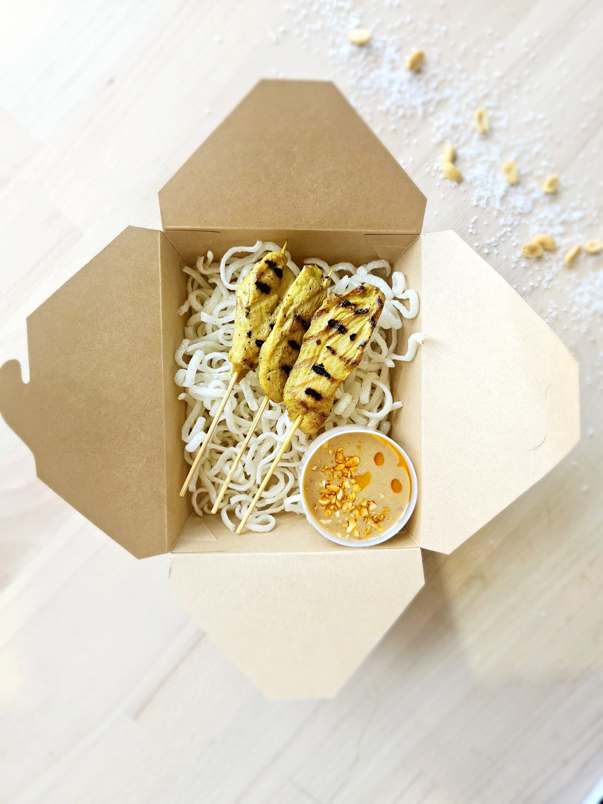
Chicken satay (satay gai)
31 RON
Info
Fasii de pui marinate in lapte de cocos si un mix de condiment thailandez, servit cu un sos de alune facut in casa . Gustul predominant este cel dulce sarat.
piept pui, zahar, turmeric, pudra curry, sos stridii, sos soia, sos alune
210/50 gr
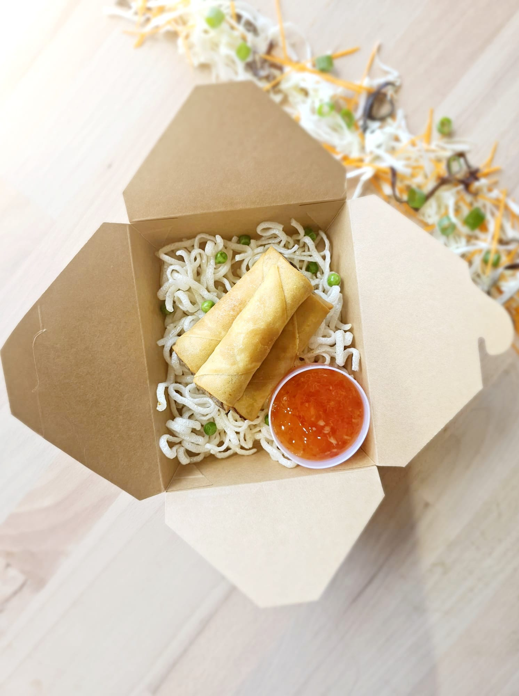
Pachetele primavara (popia)
veg 27 RON / pui 29 RON
Info
Pachetelele sunt pregatite de noi cu noodles, legume proaspete si ciuperci negre servite cu sos sweet chilli.
pui sau vegan, varza, morcov, ceapa verde, ciuperci, glass noodles, sos soia, ulei susan, sos peste, sos stridii, sos cu chili
150 gr/ 50 ml
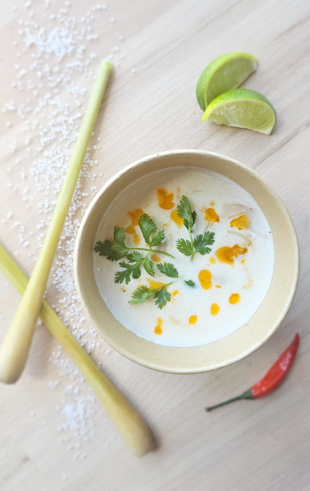
Supa tom kha gai
45 RON
Info
Supa delicioasa din lapte de cocos cu ciuperci, carne de pui si condimente thailandeze.
Extrem de aromata! Un gust complex si echilibrat intre dulce, acrisor si sarat.
Se poate transforma intr-un fel mancare principal daca este acompaniata de o portie de orez.
piept pui, lapte cocos, lemongrass, galangal, frunze de kafir, ciuperci, sos peste, suc lime, coriandru, pasta chili
300 ml
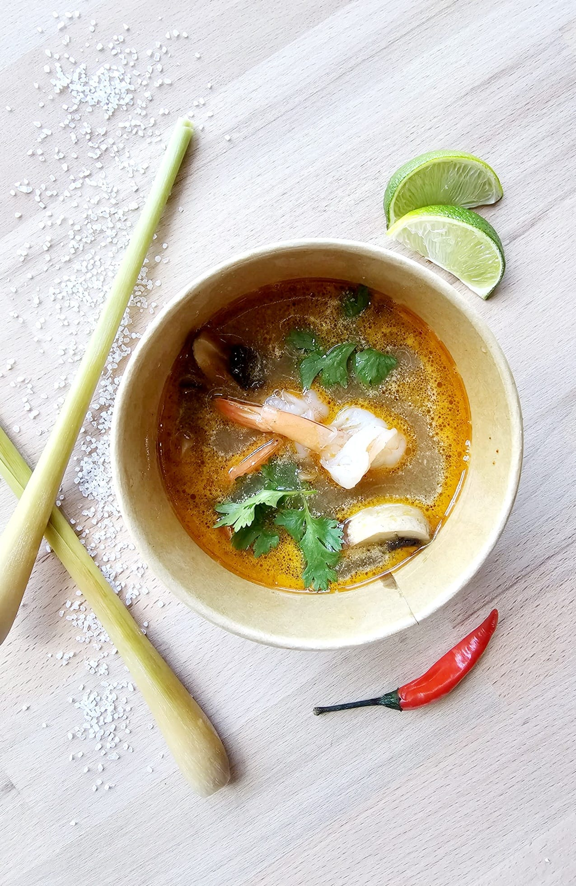
Supa tom yum
45 RON
Info
Probabil cea mai populara supa thai cu creveti.
Extrem de savuroasa.
O explozie de arome surprinzatoare int-o baza acrisoara si putin picanta.
Se poate transforma intr-un fel mancare principal daca este acompaniata de o portie de orez.
apa, creveti, galangal, lemongrass, frunze de kafir, ciuperci, sos peste, ardei iuti proaspeti, coriandru
300 ml
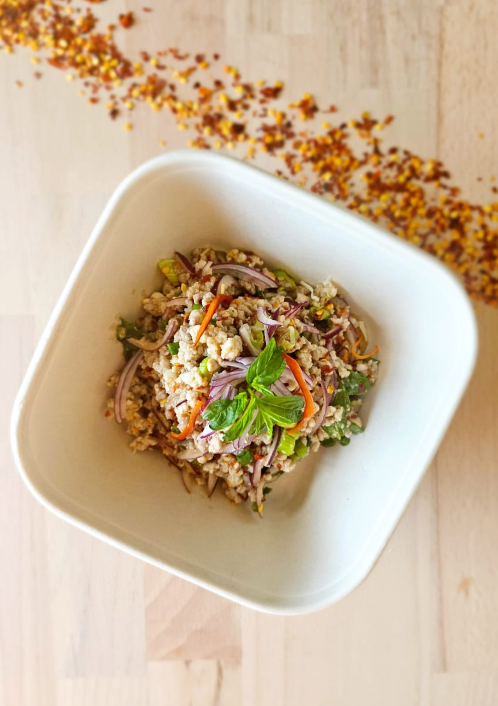
Minced pork meat salad (larb)
35 RON
Info
O salata foarte aromata, cu un gust echilibrat de ceapa, lime si menta proaspata.
carne porc, ceapa verde, menta, ceapa rosie, fulgi chili, sos peste, suc lime, pudra orez
200 gr
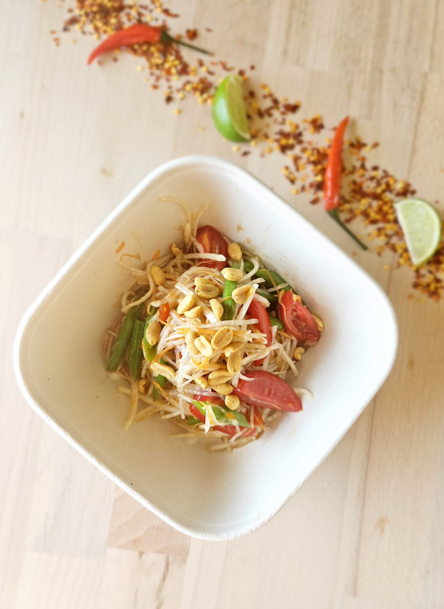
Refreshing vegetables salad (som tam)
28 RON
Info
O salata revigoranta, care te duce cu gandul la vara.
gulie, morcov, ardei iute, usturoi, fasole, rosii cherry, suc lime, sos peste, zahar, tamarind, alune
200 gr
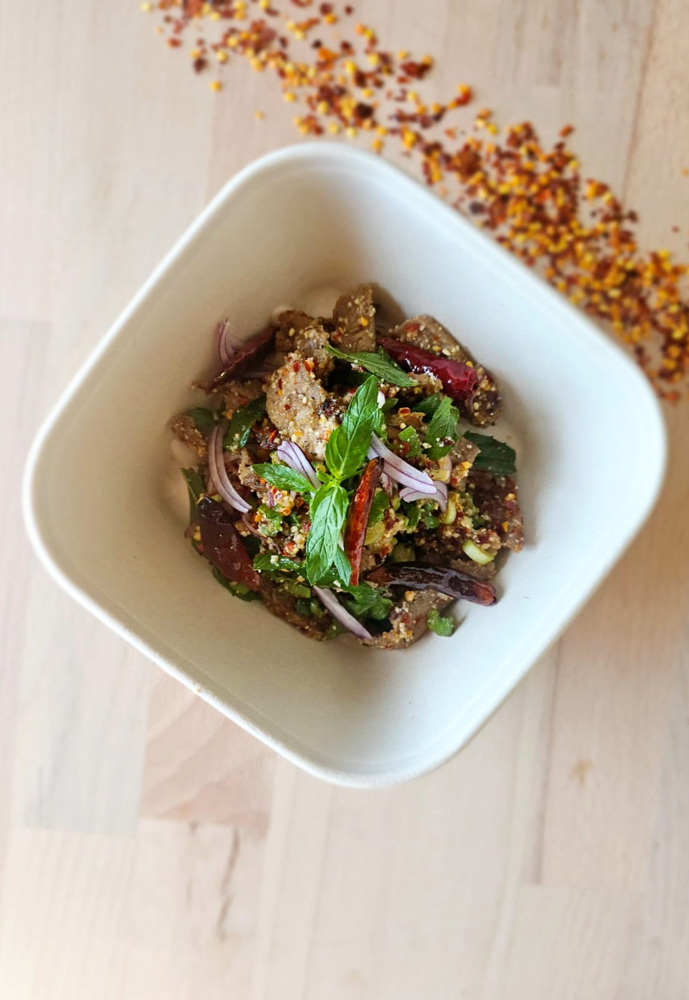
Spicy beef salad (namtok)
42 RON
Info
O salata foarte aromata, cu un gust echilibrat de ceapa, lime si menta proaspata. Cu o nota usor picanta.
vita, ceapa verde, menta, ceapa rosie, fulgi chili, sos peste, suc lime, pudra orez
200 gr
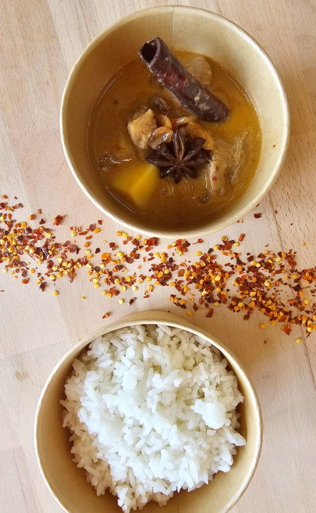
Massaman curry
59 RON
Info
Massaman este un curry mai bland comparativ cu alte curry-uri thailandeze ,dar extrem de savuros cu note subtile de arome calde,datorate condimentelor specific,oferind o experienta culinara complexa si satisfacatoare.
carne vita, chili uscat, pasta curry, pasta creveti, sos peste, lapte cocos, alune, ceapa, cartofi, zahar, foi dafin
300 gr
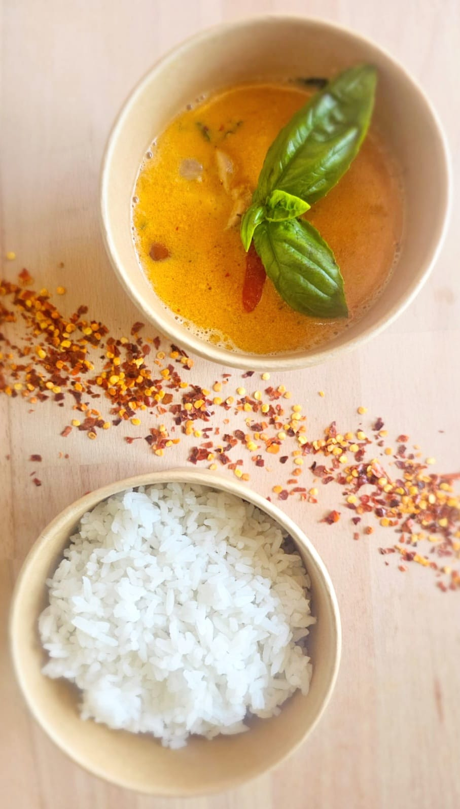
Red curry (Gaeng Phed)
veg 38 RON / pui 42 RON / porc 45 RON / vita 54 RON
Info
Gustul curry-ului rosu este o combinatie echilibrata de picant,sarat si dulce avand o caldura intensa datorita ardeilor rosii,dar si o textura cremoasa datorita laptelui de cocos.
legume sau pui sau porc, lapte cocos, dovlecei, fasole, busuioc, chili, pasta curry, pasta creveti, lastar bambus, sos peste
300 gr
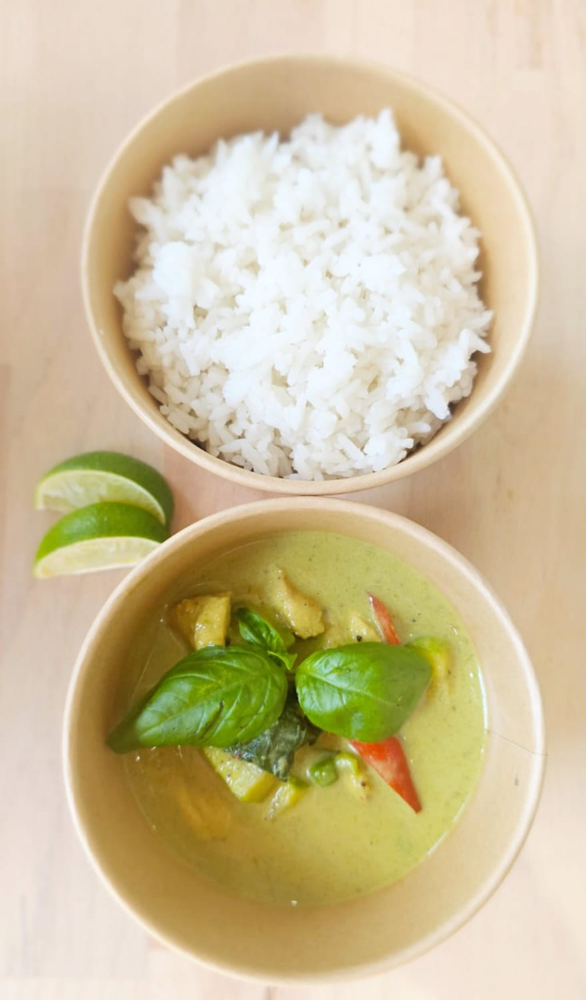
Green curry (kaeng khiao wan)
veg 38 RON / pui 42 RON / porc 45 RON / vita 54 RON
Info
Gustul curry-ului este un echilibru armonios intre picant,dulce si sarat,cu iuteala ardeilor temperate de laptele cremos de cocos si prospetimea ierburilor.
legume sau pui sau porc, fasole, dovlecei, chili, busuioc, lapte cocos, pasta curry, pasta creveti, sos peste
300 gr
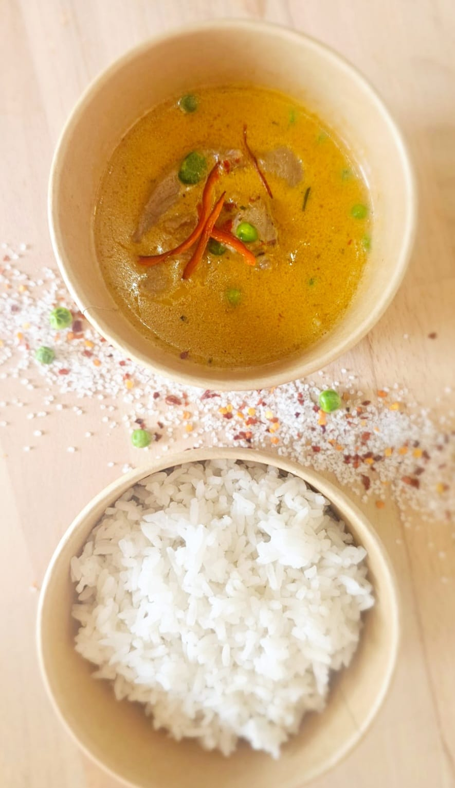
Panaeng
pui 44 RON / porc 47 RON / vita 57 RON
Info
Gustul panang este un echilibru intre dulce,sarat si usor picant,cu o aroma mai complexa datorita adaosului de arahide si a condimentelor folosite.
pui sau porc sau vita, lapte cocos, alune, pasta curry, fasole, pasta creveti, zahar, sos peste
300 gr
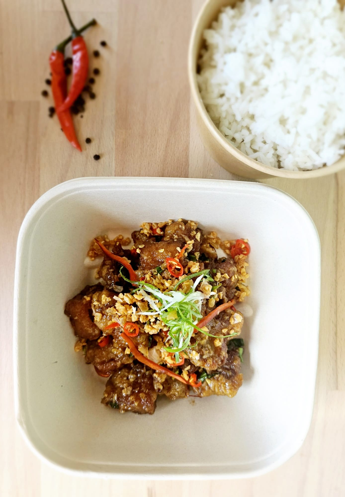
Crispy duck fried with garlic (ped klua prik kluea)
59 RON
Info
carne rata, usturoi, chili, ceapa verde, sos negru, sos soia, sos stridii, sos peste
300 gr
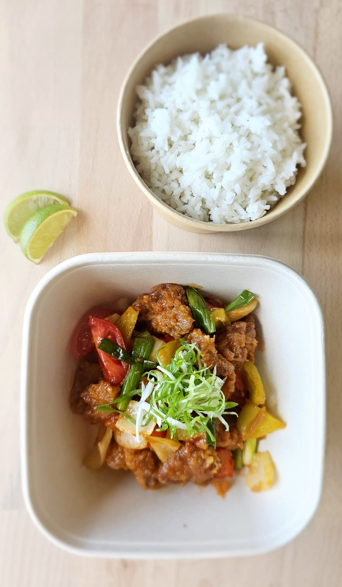
Duck or chicken sweet and sour (ped priao wan)
pui 38 RON / rata 54 RON
Info
carne rata sau pui, ceapa, ceapa verde, ardei gras, zahar, sos dulce acrisor
300 gr
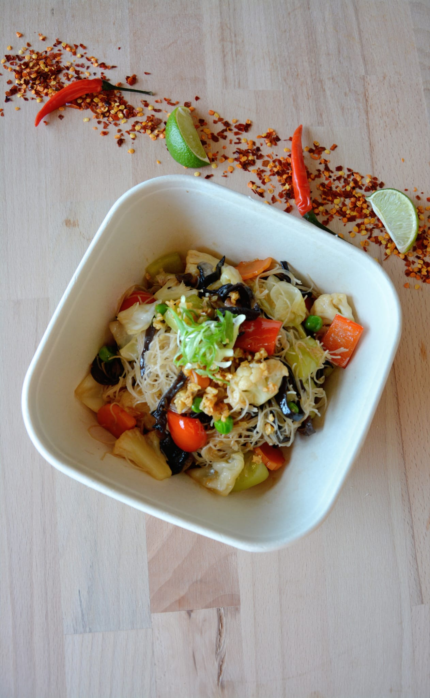
Noodles stir fried (pad_see_ew)
veg 32 RON / pui 35 RON / porc 38 RON / vita 45 RON
Info
taitei orez, morcov, varza, ardei gras, fasole, ciuperci, sos stridii, sos soia, sos peste, ulei susan
350 gr
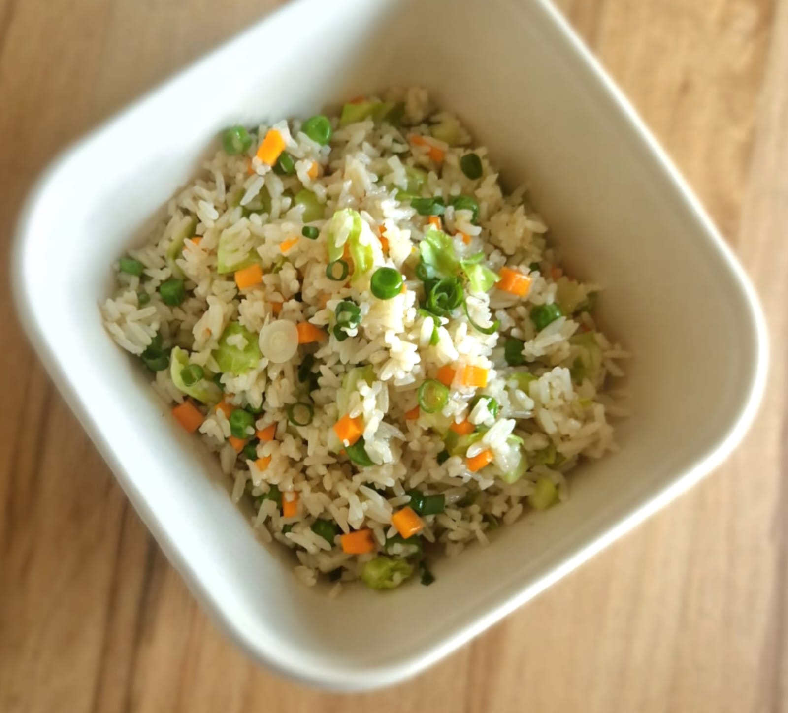
Fried rice (kao pad pak)
veg 33 RON / pui 36 RON / porc 39 RON / vita 46 RON
Info
orez, morcovi, dovlecel, ceapa, ceapa verde, mazare
350 gr
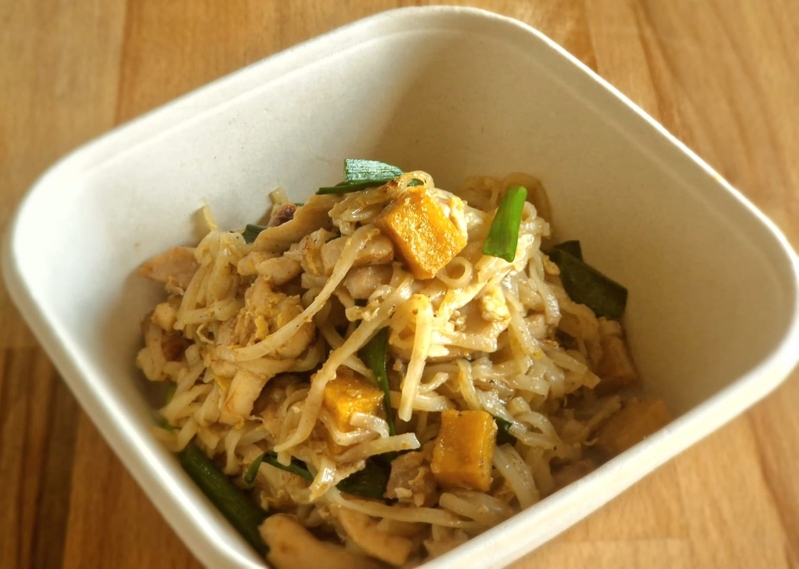
Pad Thai
pui 42 RON / creveti 59 RON
Info
taitei, pui, tofu, ou, ceapa rosie, ceapa verde, germeni fasole, alune, sos padthai, sos peste
400 gr
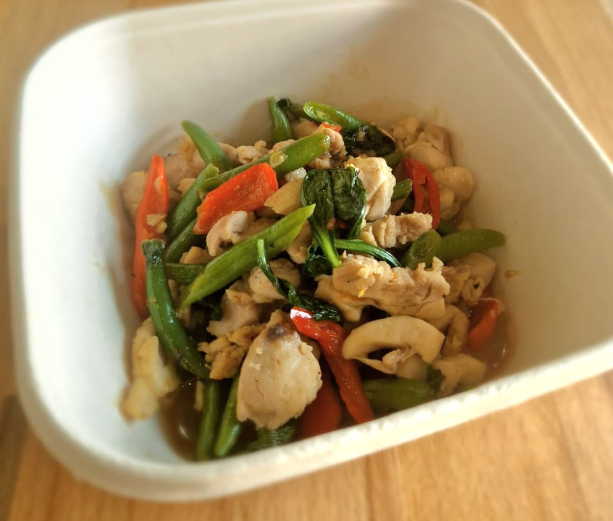
Pad Kha Prao
pui 39 RON / porc 42 RON / vita 51 RON
Info
busuioc, ardei iute, fasole, sos stridii, sos peste, sos soia, orez
400 gr
About us
Cu pasiune pentru mancare homemade
Bucataria thailandeza isi defineste esenta prin echilibrul perfect intre cele 5 gusturi: dulce, sarat, acru, amar si iute. O adevarata simfonie de arome in fiecare farfurie.
Va asteptam cu drag sa gustati preparatele noastre proaspere, gatite cu suflet de Chef Sine, venita tocmai din Thailanda pentru a va oferi o experienta culinara autentica